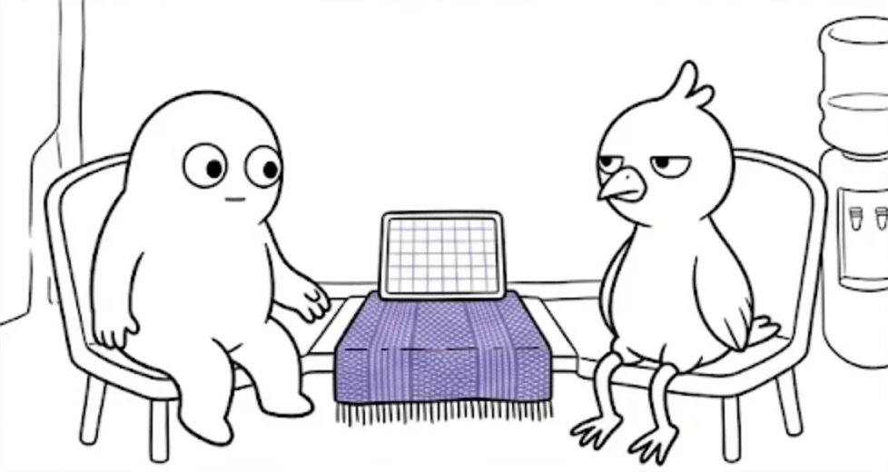
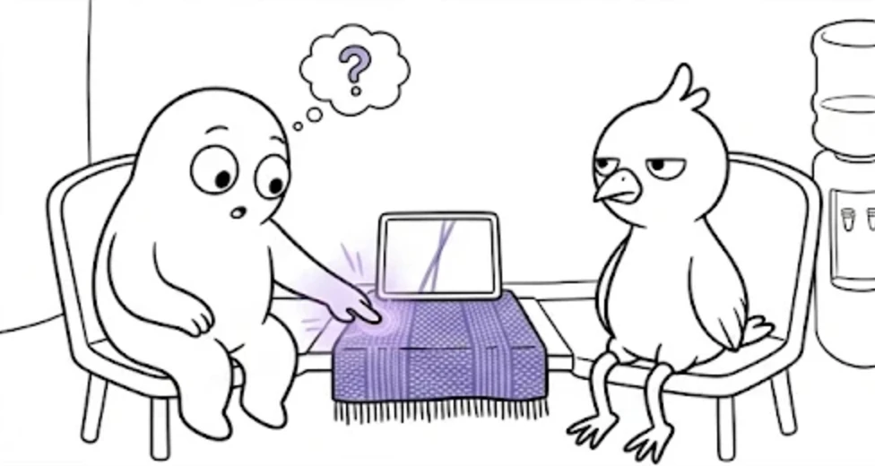
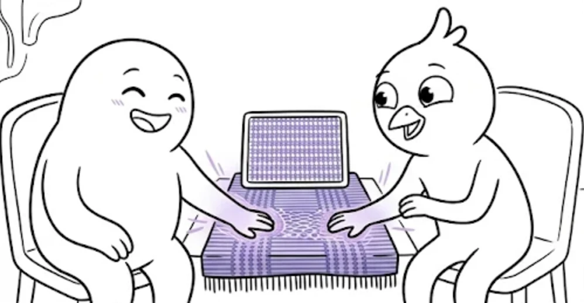
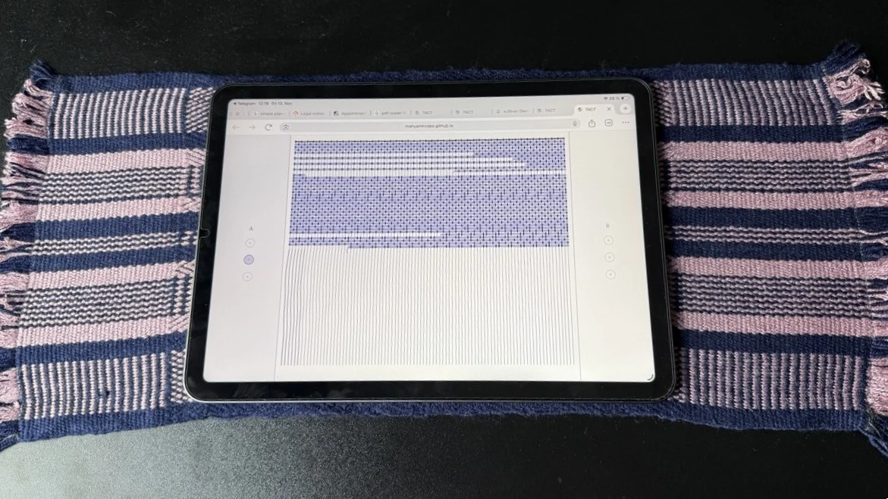

TACT
Speculative HCI · Research through Design · 2026
A digital textile that only takes shape when two touches meet.
TACT treats weaving as a shared, embodied act rather than individual production. Drawing on my practice in textile design, it translates the qualities of cloth (thread tension, interlacing, the slow accumulation of rows) into an interface that answers to touch.
Research question
How might textile-based interaction open room for shared, voluntary and embodied presence in public spaces designed for administrative processing?
The interaction
- 01 · One touch. The threads respond: they lean towards the touch and change tension. Nothing is woven.
- 02 · Two touches. When two touch points are active at the same time, light travels through the warp and a textile forms, row by row. More touch points produce other weave structures.
- 03 · Release. The woven structure remains, with a loose thread where the touches ended.
A working prototype for tablets. It senses touch points, not people: it cannot tell whether two touches come from two different people or from one person using both hands.



1/3Prototype in use

HandwovenStaged
Situated context
What if waiting together could mean more than being processed separately?
Waiting rooms as designed space
TACT considers the waiting room of a public immigration office (Ausländerbehörde) as a possible setting. Such rooms are designed for processing: appointments, documents, numbers, individual cases. Their furniture and procedures place people side by side while addressing each of them alone.
TACT asks why public spaces leave so little room for shared, voluntary and embodied experience, and offers a speculative counterproposal: a soft surface that could be touched together, or simply left alone.
Questions
- Materiality. When might the softness, texture or warmth of a shared textile invite touch, and when does touching it feel intrusive or unwanted?
- Power and participation. Can a shared interface in an institutional space offer connection without turning participation into one more expectation?
- Public space. Who shapes the experience of public waiting spaces, and which forms of shared, embodied presence does their design leave out?
Reflection
TACT is an exploratory design artefact, not a validated intervention. It does not claim to create connection, empathy or trust, nor to change institutional practice. It is offered as a material question about touch, comfort, autonomy and the organisation of public space.
Future direction · From screen to cloth
A speculative physical iteration would move the interaction from glass to textile: a soft, sensor-enabled surface between two adjacent seats, integrated into a shared table, with a small screen on the table showing the digital weaving. It would explore whether softness, texture and gentle warmth change the willingness to touch, whether contact can stay incidental rather than requested, and how the surface can be easily declined.
Design intentionCould a shared textile surface make room for voluntary, non-verbal interaction without requiring conversation or social engagement?